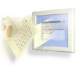

| Visual Editor
Project First-class GUI building tools for Eclipse |
 |
| News Archive |
November 24, 2004 - Visual Editor Project 1.1 Plan has been posted and linked on the Documents page.
November 3, 2004 - Visual Editor Project 1.1 Draft Plan posted and linked on the Documents page.
July 12th, 2004- The Eclipse Visual Editor stable build M1 is now obsolete. Please go to the download page and use the latest stable build.
December 8th, 2003 - The final Eclipse Visual Editor release 0.5.0 is now available. We've now started work on the 1.0.0 release.
November 18th, 2003 - For journalists, we have added a new Question and Answer document.
November 18th, 2003 - Is it real yet? What can I do with it right now?
Right now we're testing the recently-uploaded code base. Once you've downloaded and installed the code drop, the easiest way to learn what the Visual Editor does is to help us test it.
The team has written some really nicely illustrated tutorials/test passes to help get you started. Just click on the "Visual Editor Test Pass runs" link below and follow the directions to sign up for a test pass and go through it.
Or you can go through a test pass that someone else has already signed up for just to learn how things work.
After this, download the code, and get hacking. :-)
And please let us know of any difficulties you're having along the way. We're in Bugzilla, project name="VE".
November 18th, 2003 - VE Project is now officially live!
It's official! Today, the Visual Editor Project officially went live. Press releases are out! The newsgroup and mailing list should be live either today or tomorrow. The code's in the CVS server! Welcome everyone to the newest, coolest (we think) Eclipse project around!
November 17th, 2003 - VE version 0.5.0 Final Testpass kick off